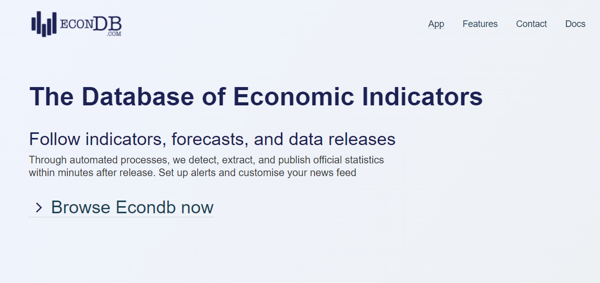
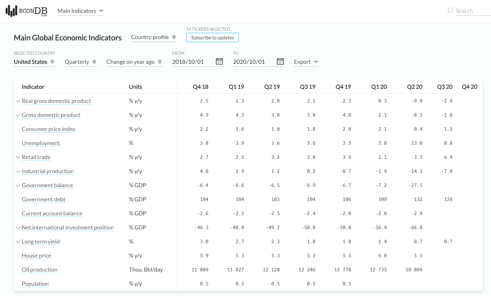
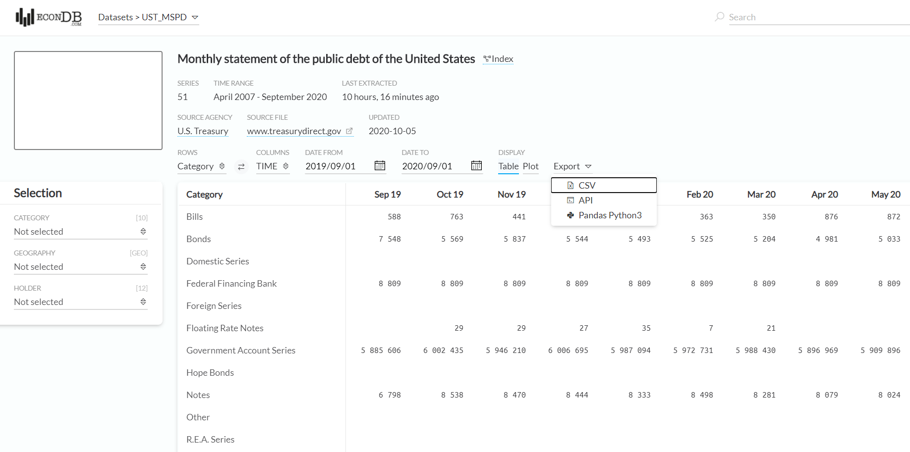
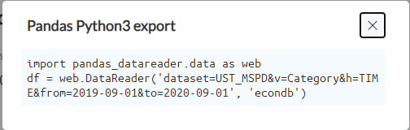
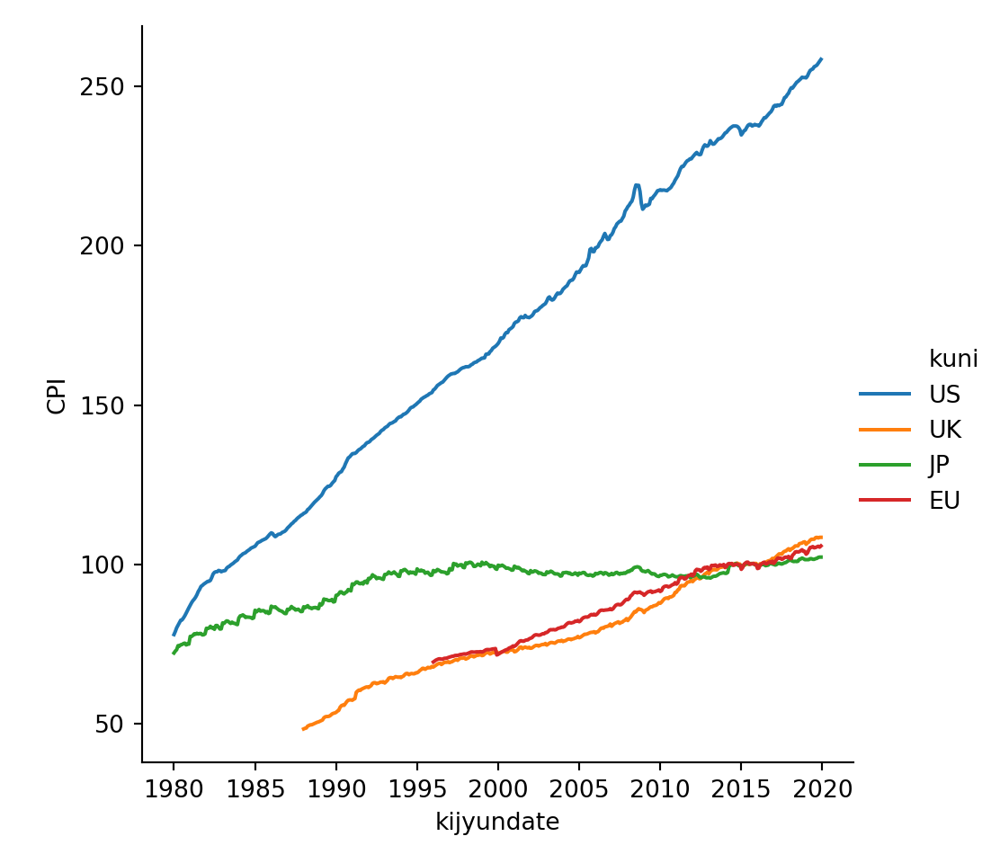
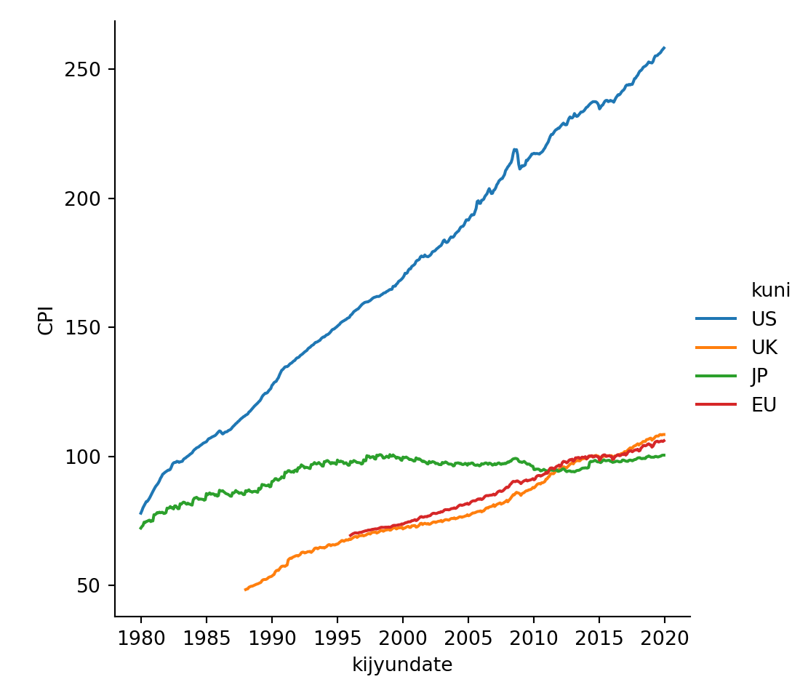
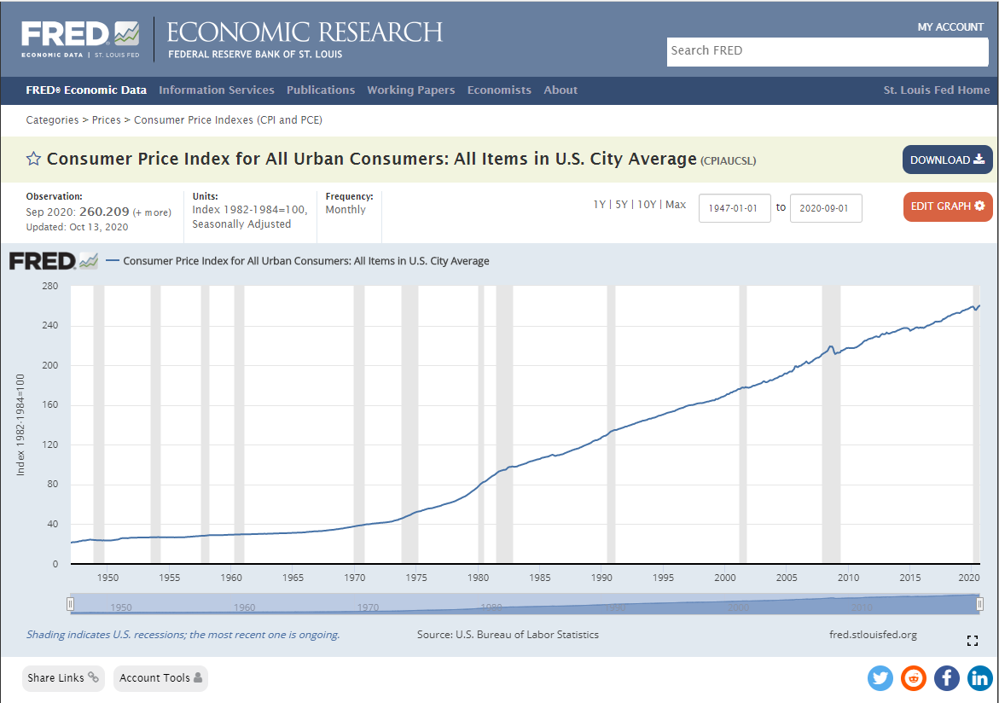
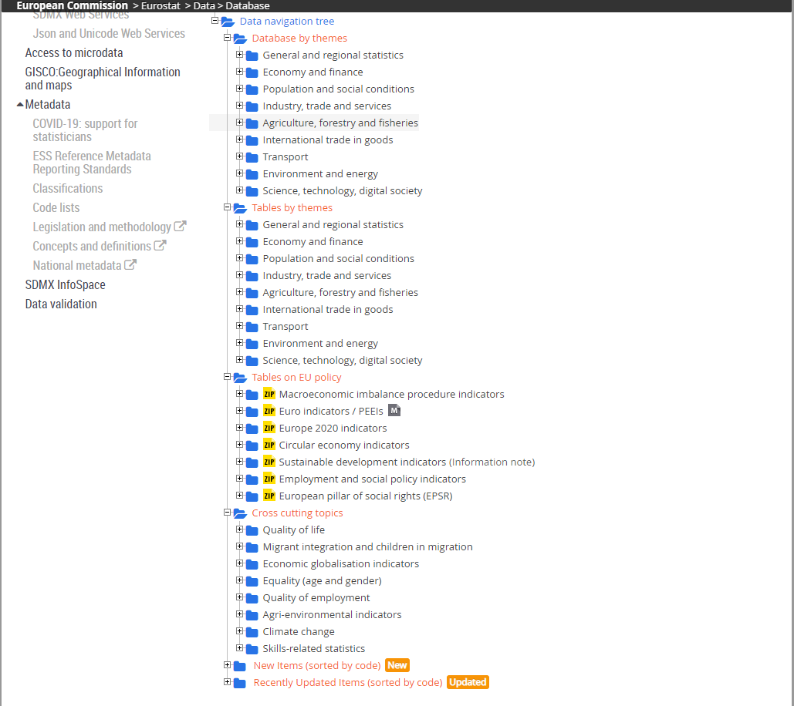
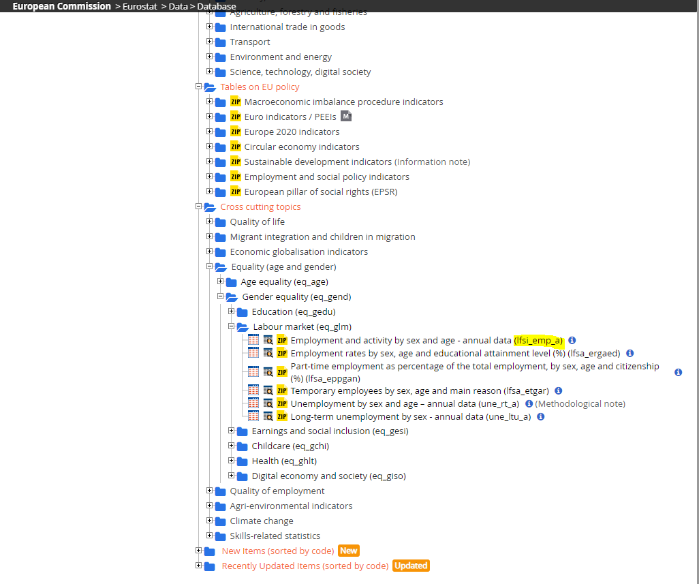

Pythonのpandas_datareaderから色々なデータを取得してみる
おはこんばんにちは。最近会社のPCにAnacondaを入れてもらいました。業務で使用することはないのですが、ワークショップで使用するので色々勉強しています。以前、Googleが提供しているEarth Engineから衛星画像を取得して解析した際にPythonを使用しましたが、今回はPythonから様々なデータが取得できるpandas_datareaderを使用したいと思います。pandas_datareaderでは以下のようなデータソースからデータが取得できます。
-
Tiingo
-
IEX
-
Alpha Vantage
-
Enigma
-
Quandl
-
St.Louis FED
-
Kenneth French’s data library
-
World Bank
-
OECD
-
Eurostat
-
Thrift Saving Plan
-
Nasdaq Trader symbol definitions
-
Stooq
-
MOEX
-
Naver Finance
なお、このブログではRstuioとblogdownパッケージ、gitを組み合わせてgithub上に記事を投稿しています。ですが、Rstudioとreticulateパッケージのおかげで、pythonを使用した記事もrmdで作成し、htmlとして出力できています。ここでまず、reticulateパッケージを用いてconda仮想環境へ接続する方法を紹介しておきます。
library(reticulate)
conda_path <- "C:\\Users\\hoge\\Anaconda3\\envs\\環境名"
use_condaenv(conda_path)
これで接続できます。conda_pathには仮想環境へのパスを入力してください。
import sys
sys.version
## '3.7.7 (default, May 6 2020, 11:45:54) [MSC v.1916 64 bit (AMD64)]'
1. ECONDBからのデータ取得
pandas_datareaderでは、ECOMDBからマクロ経済関連のデータを取得することができます。
ECONDBとは？

ECONDBは各国の主要マクロ経済データをdashboard形式で提供してくれるWebサイトで、またAPIをサポートしており、PythonやExcelにシームレスにデータを連係してくれます。

データ取得方法
pandas_datareaderを用いた使用方法は以下の通りです。
基本的な使用方法
pandas_datareaderからデータモジュールをインポートすることから始めます。
import pandas_datareader.data as web
## C:\Users\aashi\Documents\R\win-library\4.1\reticulate\python\rpytools\loader.py:44: FutureWarning: pandas.util.testing is deprecated. Use the functions in the public API at pandas.testing instead.
## level=level
EconDBからデータを取得するには、DataReaderメソッドを呼び出し、以下のようにdata_source引数に'econdb'と適当なqueryを渡せばよいです。
df = web.DataReader(query, data_source='econdb', **kwargs)
クエリパラメータの形式は、取得するデータの種類によって異なります。
クエリ指定方法
データはいくつかのデータセットに分割されます。データセットには、トピック、頻度、調査方法などの共通の特徴を抽出できるティッカーが付与されています。ユーザーは検索機能を使用してデータセットを探すことができます。UST_MSPDデータセットを例にしてみます。

ページに入ると、いくつかのフィルターがあり、特定のシリーズと特定のタイムフレームに選択を絞り込むことができます。適切なフィルタが設定された状態で、Exportドロップダウンボタンをクリックすると、選択したデータをエクスポートするための多くのオプションとフォーマットが表示されます。その中でも、Export to Pythonは、事前にフォーマットされたパラメータを持つコードの重要な部分を表示します。これをそのまま貼り付けてしまえばデータを取得できます。

query = "&".join([
"dataset=UST_MSPD",
"v=Category",
"h=TIME",
"from=2018-01-01",
"to=2019-12-31"
])
df = web.DataReader(query, 'econdb')
df.head()
## Category Bills ... United States Savings Securities
## Holder Intragovernmental Holdings ... Totals
## TIME_PERIOD ...
## 2018-01-01 3830.0 ... 159902
## 2018-02-01 3748.0 ... 159475
## 2018-03-01 4552.0 ... 159040
## 2018-04-01 2641.0 ... 158606
## 2018-05-01 577.0 ... 158233
##
## [5 rows x 51 columns]
実践的な取得コード
こんなこともできます。
import pandas as pd
from matplotlib import pyplot as plt
import pandas_datareader.data as web
from datetime import datetime
import seaborn as sns
start = datetime(1980,1,1)
end = datetime(2019,12,31)
# parameters for data from econdb
country = ['US','UK','JP','EU']
indicator = ['RGDP','CPI','URATE','CA','HOU','POP','RETA','IP']
# Parse API from econdb
econ = pd.DataFrame()
for cnty in country:
temp2 = pd.DataFrame()
for idctr in indicator:
temp = web.DataReader('ticker=' + idctr + cnty,'econdb',start,end)
temp.columns = [idctr]
temp2 = pd.concat([temp2,temp],join='outer',axis=1)
temp2 = temp2.assign(kuni=cnty,kijyundate=temp2.index)
econ = pd.concat([econ,temp2],join='outer')
econ = econ.reset_index(drop=True)
econ.head()
# Plot CPI for example
## RGDP CPI URATE CA HOU POP RETA IP kuni kijyundate
## 0 6842024.0 78.0 6.3 -10666.0 NaN 226554.0 NaN 52.17 US 1980-01-01
## 1 NaN 79.0 6.3 NaN NaN 226753.0 NaN 52.20 US 1980-02-01
## 2 NaN 80.1 6.3 NaN NaN 226955.0 NaN 51.98 US 1980-03-01
## 3 6701046.0 80.9 6.9 9844.0 NaN 227156.0 NaN 50.97 US 1980-04-01
## 4 NaN 81.7 7.5 NaN NaN 227387.0 NaN 49.71 US 1980-05-01
sns.set
## <function set at 0x0000000031ED0B88>
sns.relplot(data=econ,x='kijyundate',y='CPI',hue='kuni',kind='line')

plt.show()

2. World Bankからのデータ取得方法
世界銀行から取得できるデータとは？
世界銀行は前身が国際復興開発銀行(IBRD)、国際開発協会(IDA)であることからもわかるように開発系のデータが取得できます。最近ではCOVID-19関連のデータも取得することができます。 pandas_datareaderでは、wb関数を使用することで、World Bank’s World Development Indicatorsと呼ばれる世界銀行の数千ものパネルデータに簡単にアクセスできます。
データの検索方法
例えば、北米地域の国々の一人当たりの国内総生産をドルベースで比較したい場合は、search関数を使用します。
from pandas_datareader import wb
matches = wb.search('gdp.*capita.*const')
print(matches.loc[:,['id','name']])
## id name
## 716 6.0.GDPpc_constant GDP per capita, PPP (constant 2011 internation...
## 10411 NY.GDP.PCAP.KD GDP per capita (constant 2015 US$)
## 10413 NY.GDP.PCAP.KN GDP per capita (constant LCU)
## 10415 NY.GDP.PCAP.PP.KD GDP per capita, PPP (constant 2017 internation...
## 10416 NY.GDP.PCAP.PP.KD.87 GDP per capita, PPP (constant 1987 internation...
NY.GDP.PCAP.KDがそれに当たることがわかります。2010年のUSドルベースで実質化されているようです。
データの取得方法
download関数でデータを取得します。
dat = wb.download(indicator='NY.GDP.PCAP.KD', country=['US', 'CA', 'MX'], start=2010, end=2018)
print(dat)
## NY.GDP.PCAP.KD
## country year
## Canada 2018 44917.369814
## 2017 44325.416776
## 2016 43536.913403
## 2015 43596.135537
## 2014 43635.095481
## 2013 42846.284196
## 2012 42315.807389
## 2011 42036.997844
## 2010 41155.323638
## Mexico 2018 9945.776845
## 2017 9842.400712
## 2016 9751.569083
## 2015 9616.645558
## 2014 9426.324588
## 2013 9282.991933
## 2012 9280.258638
## 2011 9076.301453
## 2010 8878.561377
## United States 2018 59821.592274
## 2017 58387.775808
## 2016 57418.933846
## 2015 56863.371496
## 2014 55574.356825
## 2013 54604.130054
## 2012 53989.248340
## 2011 53190.231121
## 2010 52759.998081
pandasのdataframe形式でデータを取得できていることが分かります。年と国がindexになっていますね。
3. Fama/French Data Libraryからのデータ取得方法
Fama/French Data Libraryで取れるデータとは
金融関連データになりますが、有名なFama/Frechの3 Factor modelのデータセットがFama/French Data Libraryから取得できます。get_available_datasets関数は、利用可能なすべてのデータセットのリストを返します。
データ取得方法
from pandas_datareader.famafrench import get_available_datasets
len(get_available_datasets())
## 297
利用可能なデータセットは297です。 データセットにどんなものがあるか、20個ほどサンプリングしてみます。
import random
print(random.sample(get_available_datasets(),20))
## ['Japan_3_Factors_Daily', 'Developed_ex_US_Mom_Factor_Daily', 'Portfolios_Formed_on_ME', '25_Portfolios_OP_INV_5x5', 'North_America_6_Portfolios_ME_OP', 'Europe_6_Portfolios_ME_Prior_250_20_daily', 'Portfolios_Formed_on_INV', '10_Industry_Portfolios_Wout_Div', '5_Industry_Portfolios', '32_Portfolios_ME_OP_INV_2x4x4', 'Europe_32_Portfolios_ME_INV(TA)_OP_2x4x4', 'North_America_6_Portfolios_ME_Prior_12_2', 'Europe_25_Portfolios_ME_Prior_12_2', 'Developed_ex_US_25_Portfolios_ME_OP_Daily', 'Europe_3_Factors', 'Portfolios_Formed_on_E-P', 'Asia_Pacific_ex_Japan_25_Portfolios_ME_Prior_12_2', 'Europe_25_Portfolios_ME_OP', 'Developed_25_Portfolios_ME_BE-ME', '38_Industry_Portfolios']
日本株のポートフォリオも存在します。
ds = web.DataReader('5_Industry_Portfolios', 'famafrench')
print(ds['DESCR'])
## 5 Industry Portfolios
## ---------------------
##
## This file was created by CMPT_IND_RETS using the 202201 CRSP database. It contains value- and equal-weighted returns for 5 industry portfolios. The portfolios are constructed at the end of June. The annual returns are from January to December. Missing data are indicated by -99.99 or -999. Copyright 2022 Kenneth R. French
##
## 0 : Average Value Weighted Returns -- Monthly (59 rows x 5 cols)
## 1 : Average Equal Weighted Returns -- Monthly (59 rows x 5 cols)
## 2 : Average Value Weighted Returns -- Annual (5 rows x 5 cols)
## 3 : Average Equal Weighted Returns -- Annual (5 rows x 5 cols)
## 4 : Number of Firms in Portfolios (59 rows x 5 cols)
## 5 : Average Firm Size (59 rows x 5 cols)
## 6 : Sum of BE / Sum of ME (5 rows x 5 cols)
## 7 : Value-Weighted Average of BE/ME (5 rows x 5 cols)
5つ目がポートフォリオに含まれる銘柄数、1つ目がvalue weightedポートフォリオの月次リターンです。
ds[4].head()
## Cnsmr Manuf HiTec Hlth Other
## Date
## 2017-03 519 592 663 577 1025
## 2017-04 517 586 658 574 1018
## 2017-05 515 583 655 572 1009
## 2017-06 511 580 651 570 1000
## 2017-07 525 615 684 613 1056
ds[0].head()
## Cnsmr Manuf HiTec Hlth Other
## Date
## 2017-03 0.79 -0.20 1.91 0.03 -1.69
## 2017-04 1.82 0.36 2.19 0.91 0.23
## 2017-05 2.02 0.35 3.12 -0.25 -0.45
## 2017-06 -1.19 0.32 -2.12 5.54 4.22
## 2017-07 -0.07 2.31 4.02 0.70 1.49
4. FERDからのデータ取得方法
FREDで取得できるデータとは
FREDでは多種多様な経済統計データを取得することができます。サイトへ行くと、以下のように統計毎にページが存在します。この統計名の横についているCPIAUCSLがTickerになっており、これを渡すことで、データを取得することができます。

データ取得方法
先ほど見たTickerをDataReader関数に渡し、データソースをfredとすることで、データを取得することができます。
import datetime
start = datetime.datetime(2010, 1, 1)
end = datetime.datetime(2013, 1, 27)
gdp = web.DataReader('GDP', 'fred', start, end)
inflation = web.DataReader(['CPIAUCSL', 'CPILFESL'], 'fred', start, end)
gdp.head()
## GDP
## DATE
## 2010-01-01 14764.611
## 2010-04-01 14980.193
## 2010-07-01 15141.605
## 2010-10-01 15309.471
## 2011-01-01 15351.444
inflation.head()
## CPIAUCSL CPILFESL
## DATE
## 2010-01-01 217.488 220.633
## 2010-02-01 217.281 220.731
## 2010-03-01 217.353 220.783
## 2010-04-01 217.403 220.822
## 2010-05-01 217.290 220.962
5. OECDからのデータ取得方法
OECDは以前以下の記事で紹介しましたが、pandas_datareaderでも取得することができます。
ただ、OECD dataset codeを指定するだけ1なので、pandasdmxよりは自由度が低いです。 あと、前回取得したMEI_ARCHIVEとか指定するとデータが多すぎて、エラーが出ます。OECDデータを取得するときには、国や期間など細かい指定のできるpandasdmxのほうが良いと個人的に思います。
なお、使用方法はFREDと同様で、データソースにoecdを指定します。
df = web.DataReader('TUD', 'oecd')
df.head()
## Country Australia ... Slovenia
## Frequency Annual ... Annual
## Measure Percentage of employees ... Percentage of employees
## Time ...
## 2018-01-01 NaN ... NaN
## 2019-01-01 NaN ... NaN
## 2020-01-01 NaN ... NaN
##
## [3 rows x 39 columns]
6. Eurostatからのデータ取得方法
Eurostatから取得できるデータとは
Eurostatは欧州連合の統計局で、主にEU地域のデータを取得することができます。データは以下のように多岐にわたっており、経済金融だけでなく農業や人口動態、輸送、環境等々多種多様なデータを取得することができます。

IDをどのように取得すればよいのかですが、以下のページにて、取得したいデータを順々に掘り進めていくと黄色で色を付けたようなIDコードが出てきます。これで取得データのIDを特定します。

ただ、eurostatもOECDと同じくsdmxに対応しているため、pandasdmxのほうが使いやすいかもしれません。
データ取得方法
一例として、 先ほど見たEmployment and activity by sex and age - annual dataを取得してみます。
df = web.DataReader('lfsi_emp_a','eurostat').unstack()
df.head()
## UNIT INDIC_EM SEX AGE GEO FREQ TIME_PERIOD
## Percentage of total population Persons in the labour force (former name: active persons) Females From 15 to 24 years Austria Annual 2018-01-01 54.0
## 2019-01-01 52.7
## 2020-01-01 52.7
## Belgium Annual 2018-01-01 27.8
## 2019-01-01 29.5
## dtype: float64
最後に
pandas_datareaderを使用して、様々なソースから多種多様なデータを取得しました。資産運用会社などで働いている方はbloombergやEIKONからデータを取得できるため、あまり魅力的に感じないかもしれませんが、個人で分析をしている方や定期的にデータを取得したい方は非常によいパッケージだと思います。自分自身、この新しいWebサイトにリニューアルしてから、週次や月次単位で経済分析を上げようかなと思っており、これらを使用して経済の定点観測をしたいなと思っているところです。皆さんも興味あるデータをpandas_datareaderで自動収集してみてください！
-
サイトで統計を選び、
export >- SDMX Queryとするとその統計のコードが見れます。 ↩︎